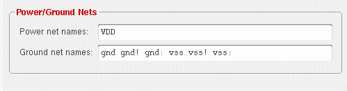

Dummy Instance Generation
Dummy instances are created in the layout to counter electrical effects that are observed at small geometries. These instances get their connectivity from the layout net to which they are tied.
All the terminals of a dummy instance, except its bulk terminal, are connected to the tie net. The bulk terminal, wherever present, is connected to the same bulk net as that used by the instance from which the dummy is created.
Depending on the purpose of the net to which a dummy instance is tied, the dummy instances can be categorized as:
- Active dummies – dummies that are connected to a net other than power or ground
- Inactive dummies – dummies that are tied to a power or ground net
Because dummies get their category—active or inactive—depending on the net to which they are connected, it is necessary to specify which nets are power and ground nets before you create dummies.
If you choose to add active dummies to your design, it is advisable to take these dummies to the schematic—also called backannotation—to ensure no mismatches are reported during a layout versus schematic run. Inactive dummies, on the other hand, can be backannotated optionally.
Power and Ground Nets Specification for Dummy Instances
To assign a dummy instance to an appropriate net during generation, you must specify which nets should be used as power and ground nets. You can do this by setting the lxSupplyNetNames and lxGroundNetNames environment variables, respectively.
Alternatively, you can specify the power or ground nets by using one of the following:
-
The Power net names and Ground net names fields in the Connectivity form.
 -
SKILL commands that search for a regular expression on the substrings in net names and then assign values to
lxSupplyNetNamesandlxGroundNetNames.
The SKILL example below demonstrates the use of regular expression style matching of substrings when specifying the power and ground nets in a design.
You must run the SKILL code below after the design is loaded to initialize the power and ground net environment variables.
procedure( companyPowerNet(net)
ciIsNet(net "company_power")
)
procedure( companyGroundNet(net)
ciIsNet(net "company_ground")
)
procedure( companyPowerNetNames(cv)
let( (res)
res = ""
foreach(net cv~>nets
if( companyPowerNet(net)
sprintf(res "%s %s" res net~>name)
)
)
res
)
)
procedure( companyGroundNetNames(cv)
let( (res)
res = ""
foreach(net cv~>nets
if( companyGroundNet(net)
sprintf(res "%s %s" res net~>name)
)
)
res
)
)
procedure( initPowerAndGroundNetNames(cv)
ciRegisterNet( "company_ground" nil
?regexNetNames '("vss" "VSS" "gnd" "GND" "ground" "GROUND" ) )
ciRegisterNet( "company_power" nil
?regexNetNames '("vdd" "VDD!" "vcc!" "VCC!") )
envSetVal("layoutXL" "lxSupplyNetNames" 'string companyPowerNetNames(cv))
envSetVal("layoutXL" "lxGroundNetNames" 'string companyGroundNetNames(cv))
)
After the SKILL code is loaded, set up the power and ground nets by calling:
initPowerAndGroundNetNames(cv)
To verify if the SKILL code was successfully initialized, use the following commands:
envGetVal("layoutXL" "lxSupplyNetNames")
envGetVal("layoutXL" "lxGroundNetNames")
The following properties are associated with Layout XL dummy instances.
Related Topics
Support for Flexible Connectivity in Dummy Instances
Dummy Instances Backannotation
Return to top